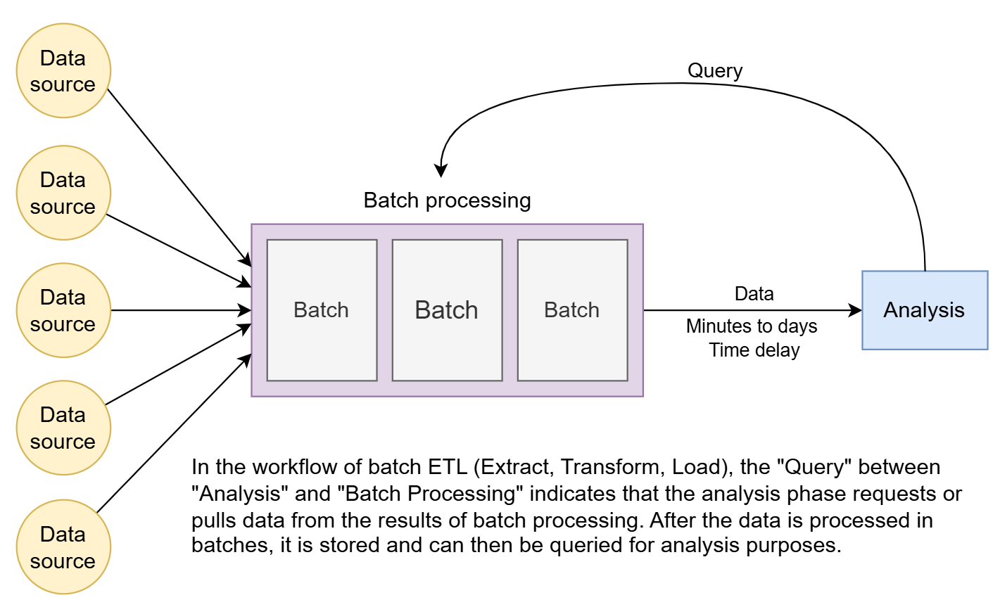
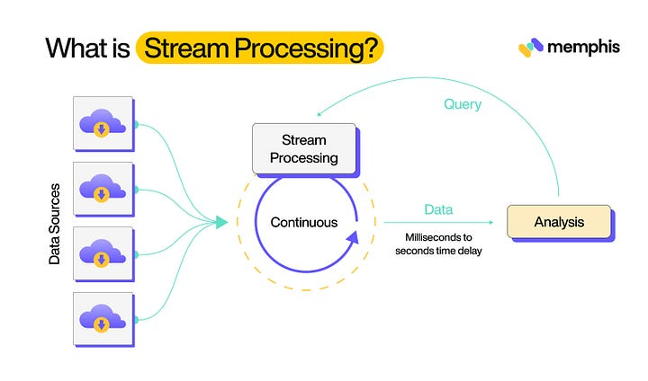
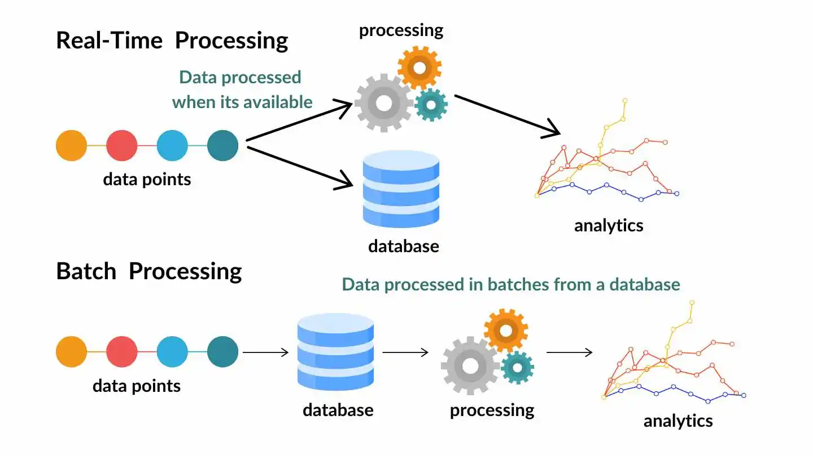

System Design Mastery
Master scalable systems with premium insights
📦 Batch Processing vs Stream Processing - Processed Periodically vs Instant Insights
📦 BATCH PROCESSING
1️⃣ What is it?
Batch Processing means:
- 🔄 Processing large volumes of data together at scheduled intervals.
- 📊 Data is collected first.
- ⏰ Processing happens later.
Key Concept:
Batch processing means collecting data first, then processing it later at scheduled intervals.
Example:
- 📈 Daily sales report
- 💰 Monthly payroll

📊 Batch Processing: Periodic data processing
2️⃣ Why does it exist? (What problem does it solve?)
Batch processing solves:
- 🔢 Large data computation
- 📚 Historical analysis
- ⏰ Scheduled tasks
5️⃣ When to use / When NOT to use
✅ Use Batch Processing:
- 📊 Data analytics
- 📋 Reports generation
❌ Don't use Batch:
- 🚨 Fraud detection
- 📱 Live dashboards
- 🔔 Real-time notifications
6️⃣ Common mistake
🚨 Trying to use batch for real-time needs.
Batch = High latency
Not suitable for instant decisions.
🌊 STREAM PROCESSING
1️⃣ What is it?
Stream Processing means:
- 🔄 Processing data continuously in real time as it arrives.
- ⚡ No waiting.
- 🎯 Each event processed immediately.
Key Concept:
Stream processing means processing data continuously in real time as it arrives.
Example:
- 🚨 Fraud detection
- 📊 Real-time analytics
- 🔔 Live notifications

📊 Stream Processing: Real-time continuous data processing
2️⃣ Why does it exist? (What problem does it solve?)
Stream processing solves:
- 🎯 Real-time decision making
- ⚡ Low-latency systems
- 🔄 Instant updates
- 👀 Continuous monitoring
3️⃣ What breaks without it?
- 🚨 Fraud detected too late
- 🔔 Notifications delayed
- 📱 Live dashboards inaccurate
- 😞 User experience suffers
5️⃣ When to use / When NOT to use
✅ Use Stream Processing:
- 🚨 Fraud detection
- 💬 Real-time chat
❌ Don't use Stream:
- 📊 Large historical data processing
- 🔍 Heavy batch analytics
6️⃣ Common mistake
🚨 Overusing streaming when batch is enough.
Streaming:
- 🔧 More complex
- 💰 Higher cost
7️⃣ Real app connection
📱 WhatsApp:
- 📤 You send message
- ✅ It is delivered instantly
- 🔵 Blue ticks update immediately
That is stream processing.
📱 Social Media
- 📱 Live feed updates
- 🔔 Instant notifications
🧠 Direct Comparison

📊 Visual comparison of batch vs stream processing
🧠 When Both Are Used Together?
Many systems use:
- 🌊 Stream for real-time decisions
- 📦 Batch for analytics
This is called:
👉 Lambda Architecture
🎯 Summary
Batch processing handles large volumes of data at scheduled intervals, while stream processing handles continuous real-time data with low latency.